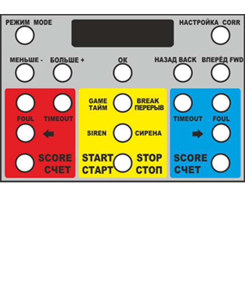

Радопульт дистанционного управления

Модель РДУ1
Описание: Пульт дистанционного управления позволяет управлять игровым табло на расстоянии до 2000 метров. Данная модель имеет возможность внедрения аккомуляторов для автономной работы порядка 4-5 часов.
Характеристики:
- Дальность приёма до 2000м
- Дисплей 20х4
- Аккумулятор устанавливается опционально.
- Блок питания 5В 2А
- Смена цвета команд
- Выбор подающей команд
- Управление звуковой сереной
- Установка времени игры
Установка аккумулятора: 2000 рублей.
Цена: 3750 рублей.